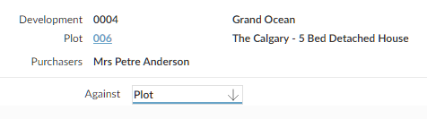
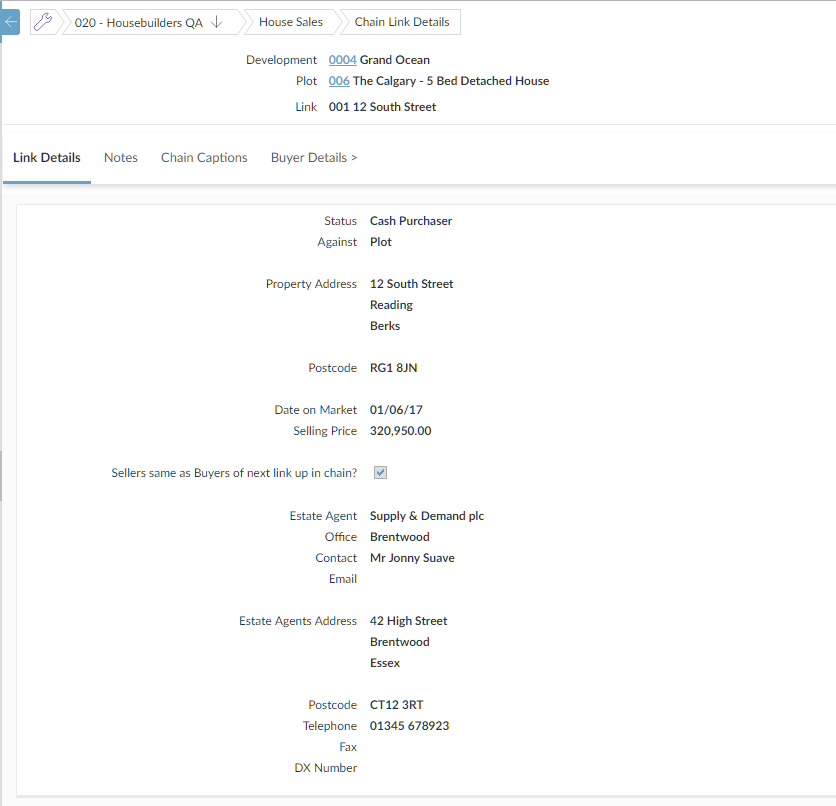
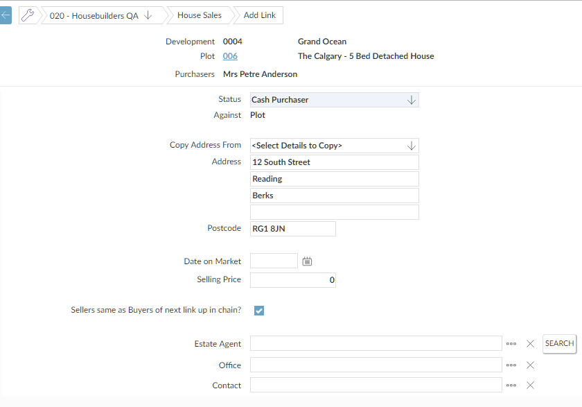

To record sales chain details:
- Go to Sales Workbench.
- Find the
- Click the Reservation> tab.
- Click the Chain tab.
- To add a chain, click
 .
. - Select which link you are entering the information about (for the first link, this will be the plot). 
- Enter details of the property that forms the next link in the chain. You can:
- Copy the address details from the purchaser, or
- Use the
- Click
 .
.

- You can also use the Notes, Buyer Details> and Seller Details> tabs to enter any additional information about the link.
- When you have finishd, either:
- To go back to the Chain tab, click
 .
. - To add another link, select Add Another Link from the Options menu.
